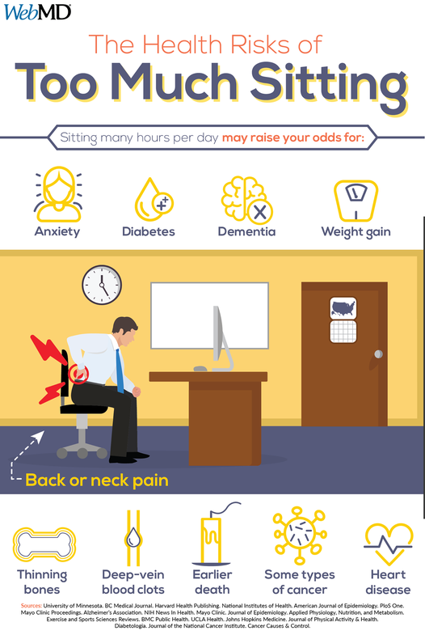
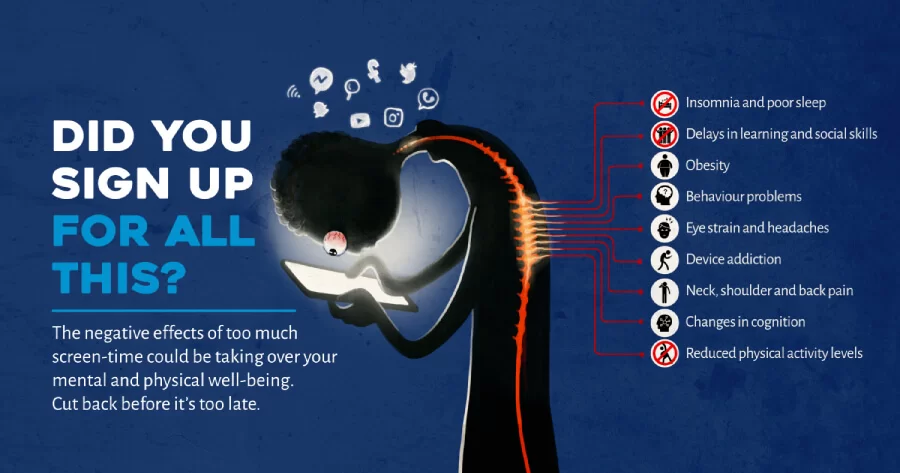
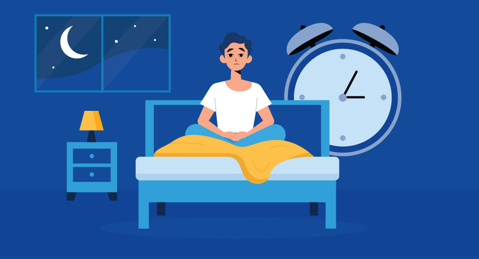

Sedentary Lifestyle vs. Productivity
Nowadays too many people rely on tech for both work and leisure. To get their screen time, most people will be sacrificing movement and exercise. While tech can improve productivity, people are bound to be stationary during computer or phone use. Which can increase the risk of obesity, diabetes, and cardiovascular issues. People might find it hard to balance the efficiency tech brings and the breaks needed for their health.

Health Experts vs. Tech Users
Medical and health experts warn that long hours of screen time contribute to eye strain, back and neck pain, and poor posture. At the same time, tech users may argue that devices are necessary for socializing, learning, and entertainment. This conflict creates a dilemma: people want the benefits of technology but struggle to avoid its negative physical impacts.

Sleep Disruption and Mental Fatigue
It is shown that being exposed to screens right before bedtime can disrupt natural sleep cycles. While some individuals rely on devices to relax in the evening, they can get cognitive impairment and emotional stress due to too much screentime.
